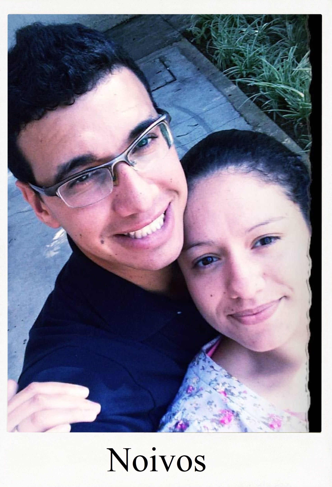
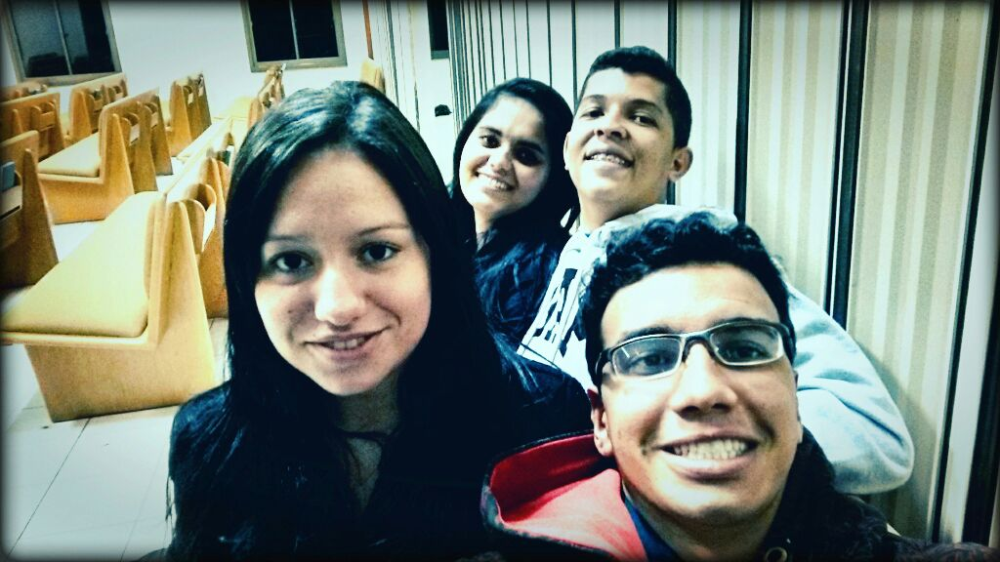

Em algum momento, decidimos que você não iria para a missão e eu não seria consultor do FSY. Em vez disso, nós iríamos nos casar. Eu morava no Parque Industrial e você disse que não se importava, então começamos a nos planejar.

Naquele tempo, o Luizinho e a Alice também estavam namorando, e nós quatro passávamos muito tempo juntos. Saíamos para comer, íamos às atividades da igreja; era muito bom. Por conta disso, algumas pessoas diziam que em breve seríamos pais. Para não dar razão ao que diziam, passamos os nove anos seguintes sem engravidar, hahahahaha.

Voltar para Namoro Casamento